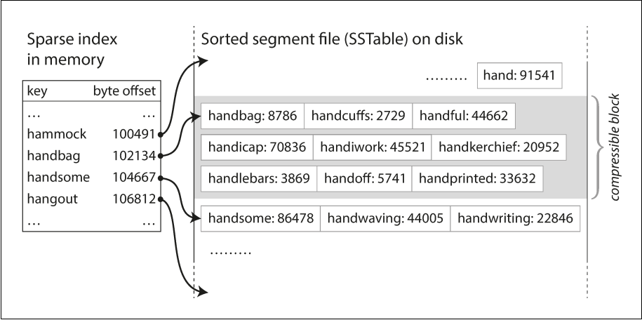

SSTables + LSM Trees
Quick recap
- Log based storage + in-memory Hashmaps
- Engines powered by logs(append only records) are write efficient
- Read efficiency is improved via in memory hashmaps(key=>byte offsets)
- Binary files(byte streams) are preferred over text files for storing log
- Logs grow very fast hence broken into segments and occassionally compacted
- Storage engine has lots of shared resources, hence concurrency management
- Key Questions still unanswered
- What if number of keys exceeds RAM rendering in-memory hash maps infeasible
- How do we scan all keys within a range?
SSTables: Key characters
 Image Credits: Google Gemini
Image Credits: Google Gemini
- Sorted String tables: All logs storing the key value pairs are sorted by keys
- Sorted String indexes: Sparse indexes of all sorted segments are stored in-memory
- Memtable: An in-memory structure that allows keys to be stored in a sorted manner. All new keys are stored in memtable and eventually flushed into disc as an SST segment
- Write ahead log(WAL): To prevent data loss in case of service crash/shutdown. memtable contents are also written on disc as a backup
- Bloom Filter: A probabilistic data structure that helps in quickly ruling out whether a key may be found in a segment or sure to be absent in it.
Write path
- All keys are first written in memtable.
- When memtable exceeds a certain threshold, it is flushed into a sorted segment(along with corresponding bloom filter as well as sparse index)
- Memtable ensures that all keys are unique in a given Segment
- Segments are merged in background

Image Credits: Designing Data Intensive Applications
Read path
- Check MemTable: Is the key in the active memory buffer? If yes, return immediately (fastest).
- Check Immutable MemTable: If there is a MemTable currently being flushed to disk, check there.
- Check SSTables (L0, L1, etc.): If not in memory, the database must check the disk files. It searches the SSTables from newest to oldest.
- Optimization: Before reading the actual file, it checks the Bloom Filter. If the filter says "Key not present," it skips that SSTable entirely.
- If the filter returns positive, it uses the Sparse Index to find the specific block in the file to read.
Merging/Compaction decisions
Size-Tiered Compaction (STC)
Used by: HBase, Cassandra (default), ScyllaDB
The philosophy here is: "Delay the work." It is lazy. It wants to accept writes as fast as possible and only organizes files when it absolutely has to.
How it works (The "Snowball" Effect)
Imagine you have buckets of different sizes on your disk.
1. Flush: MemTables are flushed to disk as small SSTables (Tier 1).
2. Accumulate: The system waits until it has, say, 4 small SSTables of similar size.
3. Merge: It triggers a compaction to merge these 4 small files into 1 medium SSTable (Tier 2).
4. Repeat: It waits until it has 4 medium SSTables, then merges them into 1 large SSTable (Tier 3).
Pros:
- Write Optimized: Excellent for write-heavy workloads (like IoT logs). The system does minimal re-writing.
Cons:
- High Read Amplification: This is the big downside. To find a key, you might have to check many different files because the keys are not neatly separated. You might have kitty1 in the small file, the medium file, and the large file.
- Space Spikes: Merging a "Large Tier" is painful. If you have four 10GB files, you need to write a new 40GB file. During the merge, you temporarily need 80GB of disk space (40GB input + 40GB output).
Leveled Compaction (LC)
Used by: LevelDB, RocksDB, Cassandra (optional)
The philosophy here is: "Keep it clean constantly." It is strict. It does extra work during writes to ensure reads are super fast later.
How it works (The "Bookshelf" Method)
The disk is divided into Levels (L0, L1, L2...), each with a target size limit (e.g., L1 is 100MB, L2 is 1GB).
Crucially, in L1 and deeper, the system guarantees that keys do not overlap between files.
- File A:
apple...cat - File B:
dog...fish - File C:
goat...zebra
You will never find cat in File B.
The "Incremental" Merge
"key range is split up into smaller SSTables... allows the compaction to proceed more incrementally"
This is the genius of Leveled Compaction.
- Trigger: L1 fills up. We need to move data to L2.
- Pick a Victim: We pick one file from L1 (e.g., File A:
apple...cat). - Find Overlap: We look at L2. We don't need to merge all of L2. We only pick the specific files in L2 that overlap with
apple...cat. - Merge: We merge just those few files and write the result back to L2.
Because we only touch a small slice of the data, we don't need massive temporary disk space (addressing the "use less disk space" claim).
Pros
- Read Optimized: Best for user-facing apps. Since keys don't overlap in deeper levels, a read query hits exactly one file per level (excluding L0).
- Space Efficient: You don't need 2x disk space for compactions; you only need enough space for the small slice you are currently merging.
Cons
- High Write Amplification: The database is constantly moving data. A single piece of data might be read and re-written 10-20 times as it trickles down from L1 to L6. This burns CPU and SSD lifetime.
Summary Comparison Table
| Size-Tiered (HBase/Cassandra) | Leveled (RocksDB/LevelDB) | |
|---|---|---|
| Logic | Merge similar-sized files together. | Merge files into strictly sorted levels. |
| Key Overlap | High. Keys can exist in many files. | None (except L0). Keys are partitioned. |
| Read Speed | Slower. Must check many files. | Fast. Checks very few files. |
| Write Speed | Fast. Low write amplification. | Slower. High write amplification. |
| Disk Space | High Overhead. Needs ~50% free space for big merges. | Low Overhead. Incremental merges use little space. |
| Best For | Logging, Time-Series, Write-Heavy. | General Purpose, Read-Heavy, Low Latency. |
References
- SSTable and Log Structured Storage: LevelDB - igvita.com
- Chapter 3, Designing Data Intensive Applications
- Bloom Filters